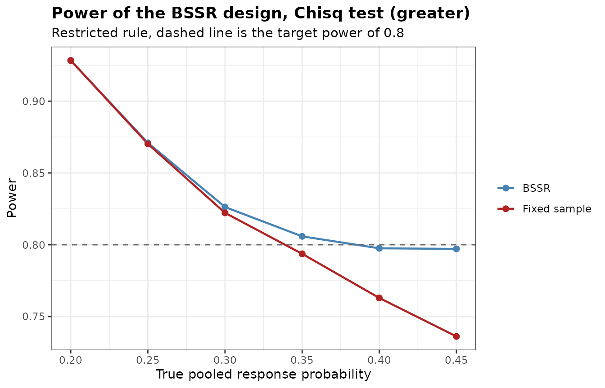

Re-estimating the Sample Size from Interim Data
Gosuke Homma
2026-10-08
Source:vignettes/bbssr-interim-reestimation.Rmd
bbssr-interim-reestimation.RmdTwo questions, two functions
BinaryPowerBSSR() answers a design question. Given a
re-estimation rule, what is the power and the expected sample size
across the scenarios that might occur? It averages over every possible
interim outcome, and it is used before the trial starts.
BinaryBSSR() answers an operational question. The
interim analysis has produced one specific number, so how many more
patients must be enrolled? It is used once, while the trial is
running.
This vignette follows a single trial through both.
Planning
A trial compares an experimental treatment against control with a binary response endpoint. The clinical team assumes a response probability of 0.45 under treatment and 0.20 under control, so a risk difference of 0.25. Randomization is one to one, the one-sided level is 0.025 and the target power is 0.80. The Z-pooled exact unconditional test is chosen.
Delta.A <- 0.25
plan <- BinarySampleSize(p1 = 0.45, p2 = 0.20, r = 1, alpha = 0.025,
tar.power = 0.8, Test = 'Z-pool')
plan
#> Sample size for a two-arm trial with a binary endpoint
#>
#> Test : Z-pool
#> Alternative : greater
#> Response rates : p1 = 0.45, p2 = 0.2
#> Allocation ratio : 1 to 1
#> Alpha : 0.025
#> Target power : 0.8
#> Exact search : crossing
#>
#> Required sample size: N1 = 54, N2 = 54, total N = 108
#> Attained power : 0.8038The assumed pooled response probability is 0.325. Its value also drives the required sample size, and unlike the risk difference it can be estimated from blinded data, which is what makes it worth re-estimating.
pooled <- seq(0.20, 0.45, by = 0.05)
sens <- data.frame(
pooled = pooled,
p1 = pooled + Delta.A / 2,
p2 = pooled - Delta.A / 2
)
sens$N <- vapply(seq_len(nrow(sens)), function(i) {
BinarySampleSize(sens$p1[i], sens$p2[i], 1, 0.025, 0.8, 'Chisq')$N
}, numeric(1))
sens
#> pooled p1 p2 N
#> 1 0.20 0.325 0.075 74
#> 2 0.25 0.375 0.125 88
#> 3 0.30 0.425 0.175 102
#> 4 0.35 0.475 0.225 110
#> 5 0.40 0.525 0.275 120
#> 6 0.45 0.575 0.325 120The required total sample size goes from 74 at a pooled probability of 0.2 to 120 at 0.45, while the risk difference stays fixed at 0.25. The reason is that the variance of a binary endpoint is largest at one half, so a pooled probability closer to that value costs patients. An error in the assumed pooled probability is therefore expensive, and it is exactly the quantity that blinded interim data can estimate.
Evaluating the re-estimation rule
Before committing to the design, check what the re-estimation buys. The interim analysis is placed at half of the planned sample size. The evaluations in this vignette use the chi-squared test, whose rejection regions are quicker to compute than those of the Z-pooled test, as an approximation to the final analysis.
design <- BinaryPowerBSSR(
p = seq(0.20, 0.45, by = 0.05),
Delta.A = Delta.A, Delta.T = Delta.A,
N1 = plan$N1, N2 = plan$N2, omega = 0.5, r = 1,
alpha = 0.025, tar.power = 0.8, Test = 'Chisq',
restricted = TRUE
)
design
#> Blinded sample size re-estimation for a binary endpoint
#>
#> Test : Chisq
#> Alternative : greater
#> Design rule : restricted
#> Initial size : N1 = 54, N2 = 54
#> Interim fraction: 0.5, giving n1 = 27 and n2 = 27
#> Treatment effect: assumed 0.25, true 0.25 (risk difference)
#> Re-estimation : exact power of Chisq at level 0.025
#> Alpha : 0.025, target power 0.8
#>
#> p p1 p2 power.BSSR power.TRAD E.N
#> 0.20 0.325 0.075 0.9284 0.9283 108.0
#> 0.25 0.375 0.125 0.8710 0.8703 108.3
#> 0.30 0.425 0.175 0.8263 0.8222 109.6
#> 0.35 0.475 0.225 0.8058 0.7937 112.5
#> 0.40 0.525 0.275 0.7975 0.7630 116.0
#> 0.45 0.575 0.325 0.7971 0.7361 118.5
plot(design)
The fixed-sample design was sized at a pooled probability of 0.325.
It keeps its power at and below that value and loses it above, falling
further behind as the pooled probability approaches one half. Under the
restricted rule the re-estimation never goes below the planned sample
size, so it leaves the power alone in the over-powered scenarios and
adds patients in the under-powered ones. The E.N column
shows what that costs.
The interim analysis
Enrolment reaches the interim milestone. The unblinded statistician is not involved. The only number extracted from the database is the total count of responders across both groups.
n1 <- ceiling(plan$N1 / 2)
n2 <- ceiling(plan$N2 / 2)
S <- round(0.40 * (n1 + n2))
data.frame(n1 = n1, n2 = n2, S = S, pooled.rate = round(S / (n1 + n2), 3))
#> n1 n2 S pooled.rate
#> 1 27 27 22 0.407The observed pooled rate of 0.407 is above the assumed 0.325. By the argument of the previous section a higher pooled rate at the same risk difference calls for more patients, so the trial has to grow.
re <- BinaryBSSR(
n1 = n1, n2 = n2, S = S,
Delta.A = Delta.A, r = 1,
alpha = 0.025, tar.power = 0.8, Test = 'Z-pool',
restricted = TRUE, N1 = plan$N1, N2 = plan$N2
)
re
#> Blinded sample size re-estimation from interim data
#>
#> Test : Z-pool
#> Alternative : greater
#> Design rule : restricted
#> Assumed effect : 0.25
#> Alpha : 0.025, target power 0.8
#>
#> Interim data
#> Patients : n1 = 27, n2 = 27, total n = 54
#> Responders : S = 22, blinded pooled rate = 0.4074
#> Recovered rates : hat.p1 = 0.5324, hat.p2 = 0.2824
#>
#> Re-estimation
#> Required total : N1 = 60, N2 = 60, total N = 120
#> Still to enrol : group 1 = 33, group 2 = 33, total = 66
#> Final size : N1 = 60, N2 = 60, total N = 120
#> Power at final N : 0.8029The output separates three quantities that are easy to confuse.
N1.re and N2.re are the total sample sizes the
re-estimation calls for. n1.stage2 and
n2.stage2 are the additional patients still to enrol, which
is what the enrolment plan needs. N1.final and
N2.final are what the trial will end up with, and they can
exceed the re-estimated totals when the restricted rule applies or when
the interim sample size already exceeds the requirement.
What the decision looks like across interim outcomes
Running the same call over the possible values of shows the shape of the rule.
S.grid <- round(seq(0.15, 0.55, by = 0.05) * (n1 + n2))
decision <- data.frame(S = S.grid, pooled = round(S.grid / (n1 + n2), 3))
decision$N.restricted <- vapply(S.grid, function(s) {
BinaryBSSR(n1, n2, s, Delta.A, 1, 0.025, 0.8, 'Chisq',
restricted = TRUE, N1 = plan$N1, N2 = plan$N2)$N.final
}, numeric(1))
decision$N.unrestricted <- vapply(S.grid, function(s) {
BinaryBSSR(n1, n2, s, Delta.A, 1, 0.025, 0.8, 'Chisq')$N.final
}, numeric(1))
decision
#> S pooled N.restricted N.unrestricted
#> 1 8 0.148 108 54
#> 2 11 0.204 108 76
#> 3 14 0.259 108 94
#> 4 16 0.296 108 102
#> 5 19 0.352 110 110
#> 6 22 0.407 120 120
#> 7 24 0.444 120 120
#> 8 27 0.500 120 120
#> 9 30 0.556 120 120The restricted curve is flat at the planned total until the interim data are unfavourable enough to trigger an increase. The unrestricted curve dips below the plan when the interim data are favourable. The two curves meet once the required sample size exceeds the plan.
Truncation at the boundary
When the blinded pooled rate is extreme, the recovered group probabilities can fall outside the unit interval and are truncated.
edge <- BinaryBSSR(n1 = 20, n2 = 20, S = 2, Delta.A = 0.4, r = 1,
alpha = 0.025, tar.power = 0.8, Test = 'Chisq')
data.frame(hat.p = edge$hat.p, hat.p1 = edge$hat.p1,
hat.p2 = edge$hat.p2, N.re = edge$N.re)
#> hat.p hat.p1 hat.p2 N.re
#> 1 0.05 0.25 0 42With a pooled rate of 0.05 and an assumed effect of 0.4, the control probability would be negative, so it is set to zero while the treatment probability stays at . The recovered risk difference is then only 0.25 rather than 0.4, and the re-estimated sample size is correspondingly larger. An assumed effect that the observed pooled rate cannot accommodate therefore produces conservative re-estimation, which is worth checking when the response rate is low.
This truncation belongs to the default
ss.method = 'exact', whose search needs probabilities
inside the unit interval. The normal approximation of
ss.method = 'standard' keeps the recovered probabilities
before truncation, with each Bernoulli variance truncated at zero, so
the assumed effect is kept.
edge.standard <- BinaryBSSR(n1 = 20, n2 = 20, S = 2, Delta.A = 0.4, r = 1,
alpha = 0.025, tar.power = 0.8, Test = 'Chisq',
ss.method = 'standard')
c(exact = edge$N.re, standard = edge.standard$N.re)
#> exact standard
#> 42 12The bbssr-reestimation-rules vignette compares the two
methods over all interim outcomes.
Unequal allocation
With an allocation ratio of to 1, the recovered probabilities are weighted accordingly and the second-stage enrolment follows the same ratio.
BinaryBSSR(n1 = 40, n2 = 20, S = 18, Delta.A = 0.25, r = 2,
alpha = 0.025, tar.power = 0.8, Test = 'Chisq')
#> Blinded sample size re-estimation from interim data
#>
#> Test : Chisq
#> Alternative : greater
#> Design rule : unrestricted
#> Assumed effect : 0.25
#> Alpha : 0.025, target power 0.8
#>
#> Interim data
#> Patients : n1 = 40, n2 = 20, total n = 60
#> Responders : S = 18, blinded pooled rate = 0.3
#> Recovered rates : hat.p1 = 0.3833, hat.p2 = 0.1333
#>
#> Re-estimation
#> Required total : N1 = 70, N2 = 35, total N = 105
#> Still to enrol : group 1 = 30, group 2 = 15, total = 45
#> Final size : N1 = 70, N2 = 35, total N = 105
#> Power at final N : 0.802Practical notes
The interim total of responders is the only quantity that leaves the database, so the analysis stays blinded and no interim test is performed. The rule can still change the type I error rate, as the end of this section shows. The re-estimated sample size still depends on , which is fixed at the design stage and must not be revised in the light of the interim data.
Fix the timing of the interim analysis, the value of
,
the test and the choice between the restricted and unrestricted rules in
the protocol before the trial starts. Report the operating
characteristics from BinaryPowerBSSR() alongside them,
since the type I error rate of the procedure is a property of the whole
rule rather than of the final test alone.
Setting Delta.T to zero in
BinaryPowerBSSR() makes the two groups identical, so
power.BSSR and power.TRAD become rejection
probabilities under the null hypothesis at the values passed through
p. BinaryTypeIErrorBSSR() evaluates the same
rejection probabilities over a grid of the common response probability
and finds their largest value over the whole range of the grid, together
with an upper bound, so the largest type I error rate does not have to
be read off a grid.
null <- BinaryTypeIErrorBSSR(
Delta.A = Delta.A, N1 = plan$N1, N2 = plan$N2, omega = 0.5, r = 1,
alpha = 0.025, tar.power = 0.8, Test = 'Chisq', restricted = TRUE
)
attr(null, 'max')
#> Design theta TIE bound
#> 1 BSSR 0.5000000 0.02712595 0.02712595
#> 2 TRAD 0.3551559 0.02593481 0.02593481The largest type I error rate is 0.02713 for the re-estimation design
and 0.02593 for the fixed-sample design, against the nominal 0.025. Two
separate sources contribute. The chi-squared test is not exact, so the
fixed-sample design alone can exceed the level, and the re-estimation
changes the rate again, because the type I error rate of an adaptive
rule is not inherited from the test it applies at the end. Substituting
an exact test removes the first source, and whether the second matters
has to be checked for the design. Running this check is therefore
worthwhile whichever test is chosen, and the
bbssr-type1-error vignette shows how
BinaryAlphaAdjBSSR() lowers the nominal level until the
rate is controlled.